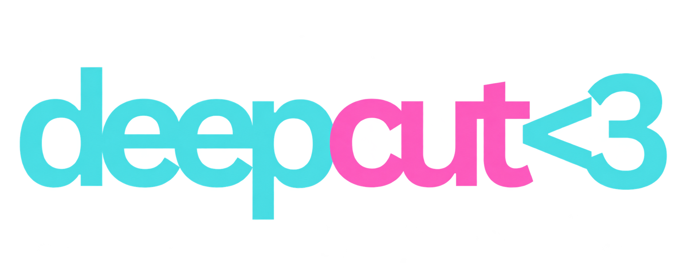

Deep Cut is a ten-question daily quiz about Tumblr, band fandoms, 2010s YouTube, and newer creator communities. You don’t have to know everything to belong here.
A fresh selection arrives every day at midnight Eastern time, with the same questions for everyone and automatic daylight saving adjustments. Your progress is saved in this browser. The main quiz has ten questions. Three era mini quizzes have five questions each and separate progress. The main quiz and Anonymous Ask are always free. Try all three eras for 24 hours, then unlock them for $5 once. Purchases follow your email account. Approved themed issues pair the quiz with its ask.
The Anonymous Ask is a daily mystery reference: type a guess, or pass for a clearer clue. You have six turns, and a wrong guess uses a turn too. Finish any game to stamp your reading diary and build a daily streak. Your diary and progress stay in this browser.
Little chimes are made from scratch, and you can mute them anytime. No celebrity clips or licensed songs. Activity counts stay on your device; there’s no public leaderboard.
Deep Cut is a working name, pending trademark and domain checks. Not affiliated with any featured artist, creator, or platform.